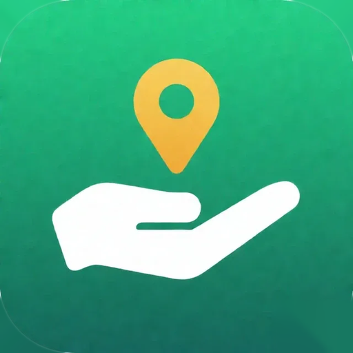

Мы рядомMy Ryadom
My Ryadom · микропомощь и потеряшки от соседейМы рядом · micro-help and lost & found from neighbors
Гиперлокальная доска добрых дел: попросите зарядку на 15 минут, зонт или размен мелочью — или сообщите о найденных ключах у подъезда. Объявления видят соседи в радиусе от 500 метров до 3 километров — списком и на карте с пинами. Контакты не нужны: только ник и эмодзи-аватар. Откликайтесь в чате сделки без рекламы и благодарите «🙏» — карма соседа растёт.A hyperlocal board of good deeds: ask for a charger for 15 minutes, an umbrella or small change — or report keys found by the entrance. Listings are visible to neighbors within a radius of 500 m to 3 km — as a list and on a map with pins. No contacts needed: just a nickname and an emoji avatar. Respond in the ad-free deal chat and give a "🙏" — the neighbor's karma grows.
СкачатьDownload
Официальные магазины. Если кнопка неактивна — публикация в процессе.Official stores. If a button is disabled, publishing is in progress.
Технические вопросы — appcreators.technolab@ya.ruTechnical questions — appcreators.technolab@ya.ru
СкриншотыScreenshots
Макет вместо скриншотов: здесь появятся настоящие экраны приложения.A mock-up instead of screenshots: real app screens will appear here.
ВозможностиFeatures
Анонимная доска соседской взаимопомощи: без регистрации, покупок и подписок. Фото-аватар и настройки — только на устройстве.An anonymous board of neighborly mutual aid: no registration, purchases or subscriptions. The photo avatar and settings stay on your device.
Как это работаетHow it works
Три шага от установки до первой благодарности.Three steps from install to the first thank-you.
Регистрации нет: выберите ник и эмодзи-аватар (или фото — оно останется на устройстве).No registration: pick a nickname and an emoji avatar (or a photo — it stays on your device).
Выберите тип и категорию, срок и награду-записку — или найдите нужное в ленте и на карте.Choose the type and category, the lifetime and a reward note — or find what you need in the feed and on the map.
Место и время — в чате сделки, без рекламы. После доброго дела — кнопка «🙏» в карму соседа.Place and time — in the ad-free deal chat. After a kind deed, tap "🙏" for the neighbor's karma.